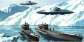

Загадки Антарктиды

Загадки АнтарктидыАнтарктида - самый холодный из всех материков. По территории Антарктида занимает далеко не последнее место среди других частей света. Площадь ее – около 1400 млн. км 2 – это почти в два раза больше площади Австралии и в полтора раза больше площади Европы. Своими очертаниями Антарктида слегка напоминает Северный Ледовитый океан. Антарктида резко отличается от всех остальных материков. Мощным слоем льда покрывает почти весь материк. Благодоря колоссальному оледеннению Антарктида – самый высокий материк на земле, его средняя высота превышает 2000 м свыше 1/ 4 ее поверхности находится на высоте более 3000 м. Антарктида – это единственный материк, на котором нет ни одной постоянной реки, и тем ни менее на ней находится в виде льда 62 % пресных вод земли.
Если бы ледниковый щит этого материка начал таять, он мог бы питать реки нашей планеты, при той водности, которую они имеют, более 500 лет, а уровень Мирового океана, от поступившей в него воды, поднялся бы более чем на 60 метров. О величине оледенения можно судить хотя бы потому, что этого льда достаточно, чтобы покрыть им весь земной шар слоем толщиной около 50 метров.
Если удалить с Антарктиды весь ледниковый покров, она будет похожа на все другие материки со сложным рельефом – горными сооружениями, равнинами и глубокими впадинами.Важным отличием от других материков является полное отсутствие государственных границ и постоянного населения. Антарктида не принадлежит никакому государству, там никто не живет постоянно. Антарктида – континент мира и сотрудничества. В ее пределах запрещаются любые военные приготовления. Ни одна из стран не может объявить ее своей землей. Юридически это закреплено международным договором, который был подписан 1 декабря 1959 года.
О географии Антарктиды :
- | Открытие Антарктиды.
- | Открытие Южного полюса.
- | Общий обзор.
- | Горы.
- | Климат.
- | Лед.
- | История официального дележа .
- | Растительность и животный мир.
- | Статистика.
- | Пингвины.
- | Китобои.
- | Как создавались антарктические станции.
- | Атлантида была в Антарктиде?.
- | Жара в Антарктиде.
- | Интересные факты.
- | Жертвы Антарктиды.|
Загадки, мистика и гипотезы Антарктиды :
- | Люди в Антарктиде.
- | Экспедиции адмирала Берда.
- | Исследование немцами Антарктиды.
- | Фабрика летающих тарелок.
- | Новая Швабия.
- | Нацисты в Антарктиде.
- | Ледниковый рейх .
- | Дисколеты.
- | Хаунебу и База 211.
- | Oперация Табернал.
- | Таинственная серия подводных лодок.
- | Секретный авианосец рейха.
- | Открытие Мертвого города.
- | Еще о Мертвом городе.
- | Ледяной блеск сокровищ Антарктиды.
- | U-977, U-530, Антарктида и тарелки.
- | Немецкие опорные пункты в Арктике и Антарктиде.
- | Белый авианосец.
- | Вальгалла.
- | Подводный призрак.
- | Специальный резерв для советского ВМФ.
- | Антарктический флот СССР.